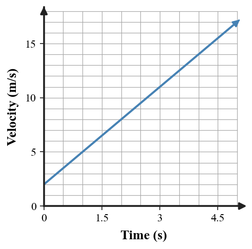

1. Define acceleration as a change in velocity over time.
2. List the three ways velocity can change: by changing ________, changing ________, or changing both.
3. A car moves east at a steady 12 m/s on a straight road. Is its acceleration positive, negative, or zero? Explain briefly.
4. A runner moving in the positive direction slows down. What sign of acceleration is expected?
5. A cyclist keeps the same speed while turning left. Does the cyclist accelerate? State the reason.
6. A cart changes from 3 m/s to 15 m/s in 4 s. Calculate its acceleration.
7. Use the velocity–time graph. Calculate the constant acceleration from the change in velocity and time, and explain how the straight rising line supports your result.

8. A car traveling east slows from 18 m/s to 6 m/s in 3 s. Calculate the acceleration, taking east as positive, and interpret the sign.
9. A skateboarder moves 7 m/s north and then turns west while staying at 7 m/s. Identify what changes and explain why the motion includes acceleration.
10. A velocity table lists 2, 5, 8, 11 m/s at 0, 1, 2, 3 s. Determine the acceleration and describe the pattern that shows it is constant.
11. A student says, “Acceleration means speeding up.” Critique the statement by giving two different motions that involve acceleration without an increase in speed.
12. A car travels around a circular track at constant speed. Defend the claim that it accelerates by connecting the changing velocity vector to the definition of acceleration.
13. A cart changes from 4 m/s to 10 m/s in 2 s. Its acceleration is
14. Which situation involves acceleration?
15. A car traveling east slows down. If east is positive, its acceleration is
16. Which motion has zero acceleration?
17. On a velocity–time graph, a horizontal line above zero represents
18. A velocity–time graph rises by the same amount each second. This indicates
19. Which statement about acceleration is correct?
20. A cart’s velocity changes from 12 m/s to 12 m/s in 5 s without changing direction. Its acceleration is